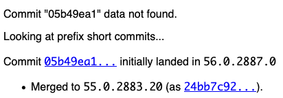
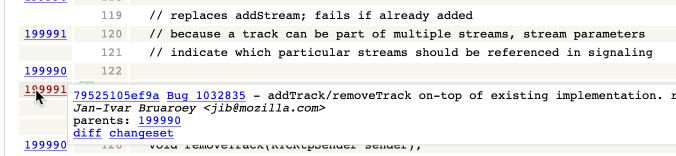
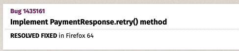
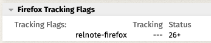
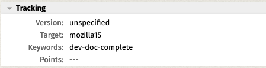
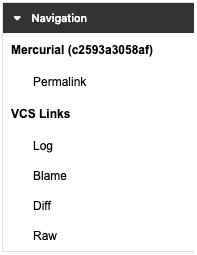
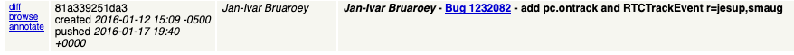
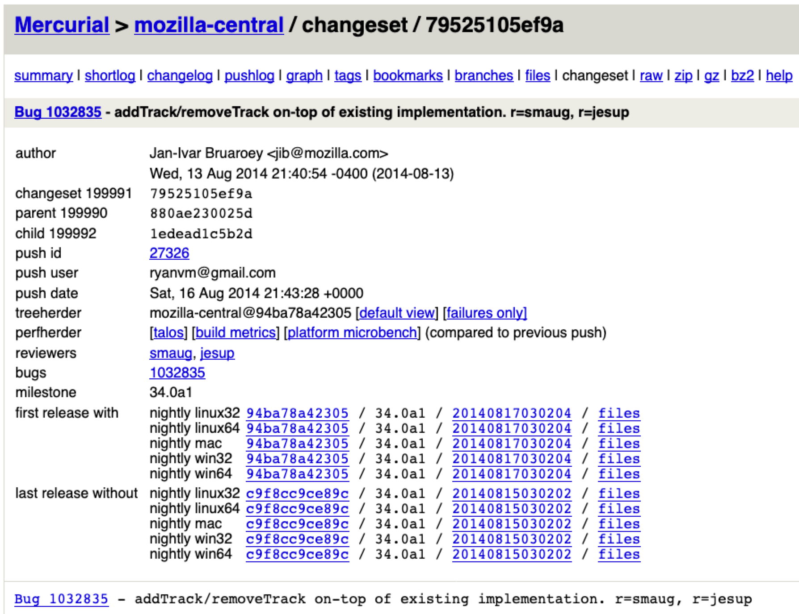

{{Draft}}{{MDNSidebar}}
When contributing to the documentation on the MDN web docs site, you will often need to locate and identify version-specific details for a given browser, such as which versions of each major browser implement support for the feature you're documenting. This article provides tips and pointers to help you figure out which version of each major browser introduced a given feature, and when it was enabled by default.
In this article, the term feature is used to refer to anything that might need to be documented on MDN. This includes APIs, HTML elements, new HTML attributes, new CSS properties, new possible values for CSS properties, and so forth. Anything that needs to be documented, from very small to very large.
There are various ways to locate information about the release of a feature on Chrome. Some of them are quite easy but less likely to provide the details you need, while others take some significant work but are much more likely to provide precise details.
The following sites and tools are helpful when trying to track down history information for a feature in Chrome:
Given a particular Chrome changeset or revision number, you can look up the version number of Chrome that first shipped with those changes included using Google's Find Releases tool. As long as the change happened after the Chrome code moved to git, this will return the corresponding version number.
For example, given the string 05b49ea1, the tool first looks for a match among the full commit changeset numbers, finds none, then looks at the prefixed short commits:

Here, we see that changeset 05b49ea1 was first landed for Chrome 56, but was then backported to Chrome 55 and was presumably shipped there. This assumes the feature was not backed out at some point, and it's important to check on this.
Chrome for Android shares version numbers with the desktop release, although not every desktop Chrome version has a corresponding Android version. The table below will help map features to versions of Chrome for Android
| If the change occurred in Chrome (Desktop) version: | Then the change was introduced into Chrome for Android version: |
|---|---|
| 1 – 18 | 18 (18 is the first version of Chrome for Android) |
| 19-25 | 25 (there were no Chrome for Android versions 19 through 24) |
| 26 and higher | The same version as desktop |
The Android WebView component switched to being based off the latest version of Chrome during the Chrome 37 lifecycle, so any feature that's present in Android WebView and was introduced during or after the Chrome 37 time period should have the same versions as the Chrome release at the same time. For example, if a feature is added to WebView while Chrome 55 is current, then the value of version_added is 55.
If a feature is added to WebView prior to the Chrome 37 time period, and its version number is not known (looking these up is a more difficult process), specify ≤37 as the version. Otherwise, if you do know the WebView component's version number, use that instead.
One useful resource is this file which lists the interfaces and/or interface members which are not available in a WebView.
interface HTMLIFrameElement : HTMLElement
getter allowPaymentRequest
setter allowPaymentRequest
This indicates that for the {{domxref("HTMLIFrameElement")}} interface (representing the members of an {{HTMLElement("iframe")}} element), the {{domxref("HTMLIFrameElement.allowPaymentRequest", "allowPaymentRequest")}} property's value can be neither read not set, essentially meaning the property is not available. This property is part of the Payment Request API, which is not yet supported in WebViews.
If only an interface line is included in the exclusion list, then the entire interface is unavailable in WebViews.
Items listed under "[GLOBAL OBJECT]" are globals which are not available on WebView.
The Chromium source code repository maintains a set of tags, one for each release of Chrome going back to version 10.0.601.0. A list of links to these tags is available. This is helpful when you need to check for the presence of a given feature in a particular release, or to see if a given change was backed out or not prior to the release of a given version of Chrome.
If you have insights into locating release versions for changes to Edge, please consider helping us write this section...
Before Edge switched to Chromium, it used an engine developed by Microsoft called EdgeHTML. These resources will help you identify when features were added or removed in EdgeHTML-based versions of Edge—that is, Edge version 18 and earlier.
After Edge 18, Edge adopted the Blink engine, becoming based upon Chromium. The version number jumped to 79, to match the Chromium version number. While most features will be the same between all Chromium browsers at the same version number, there may be some exceptions. Here are some resources to help you identify those:
There are several ways you can determine which browser release a feature arrived in. We'll look at a few of them, starting with the quickest and easiest way. Before we look at those, though, let's review some basic information you need before applying any of these techniques.
You can use Mercurial blame to identify the changeset that introduced the feature you're interested in. If you're unfamiliar with the blame feature provided by modern version control systems (including both Mercurial and git), it's a tool that displays the revision number of the most recent modification to every line in the file (or span of lines, if more than one in a row last changed in the same revision).
The specific appearance of the display will vary depending on what tool you're using to view the blame information; for example, Mozilla DXR's output for the RTCPeerConnection.webidl file looked like this when this article was written:

Here, the mouse is pointing at a row with the revision number 199991 beside it. This has opened up a tooltip with details about that revision: It was created for bug 1032835, entitled "addTrack/removeTrack on-top of existing implementation". The tooltip includes several links which can be helpful:
changeset link at the top of the page will take you to the changeset's overview. From there, the information under {{anch("From a Mercurial changeset number")}} will show you how to track down the version information.diffchangesetNote: If you aren't able to find the change because it apparently happens before Firefox was migrated to Mercurial from CVS, try using Mercurial blame on the Unified Firefox repository, which has tags in place, each representing the code state at specific points in the history of the project, including each beta and each release build. See {{SectionOnPage("/en-US/docs/MDN/Contribute/Processes/Browser_information_resources", "Unified Firefox repository")}} for details.
If you have the bug number corresponding to the bug that implemented the feature, and the bug isn't incredibly old, you can usually get the version number corresponding to the implementation of the feature straight from the bug. This information can be found in one of a few different ways.
Consider {{bug(1435161)}}. This bug covers implementing the {{domxref("PaymentResponse.retry()")}} method. If you look at that bug, you'll see the information you need right there at the top:

Right below the bug summary, you see the text "RESOLVED FIXED in Firefox 64". This corresponds to the presence of the tracking flag named firefox45 having the value fixed. On older bugs, before the release-numbered tracking flags were added, you might instead find one of these:
A tracking flag named relnote-firefox with the status set to the version of Firefox the feature arrived in. This tracking flag is intended to indicate when a feature needs to be mentioned in the release notes for the browser, but serves just as well to tell us when a feature was added.

The Target field in the Tracking group in Bugzilla is set to mozillaN, where N is the version number of Firefox. The trick to watch for is that this is sometimes inaccurate, as it represents when it was hoped to ship, not necessarily when it was actually released. Be sure to review the comments on the bug to ensure that it didn't miss its planned release.

If you're updating compatibility data for a given API interface, or for a property, method, or other feature within that interface, you may not necessarily have a bug number or changeset number to start from. This means doing a little detective work is in order. There are two approaches to take: you can try searching Bugzilla, looking for a bug that covers the change you want to identify, or you can isolate the information directly from the source tree.
A good place to start: do a Bugzilla search for a bug that mentions what you're looking for:
RESOLVED. For example, if looking for information about when {{domxref("CustomEvent")}} might have arrived, this would be the search. This returns a few results, the second of which is the one we're looking for: {{bug(427537)}}, "Implement CustomEvent DOM3 specification". Armed with that bug number, we can go back to the {{anch("Getting the Firefox release for a bug number", "previous section")}} and determine when this interface was added to Firefox.If you find a bug that corresponds to the feature you need compatibility information for, you can then go to {{anch("Getting the Firefox release for a bug number")}} to review how to isolate that compatibility data from the bug's contents.
If you don't find the information you need in Bugzilla, you can get it by tracking it down in the Firefox source tree. For the purposes of this explanation, we'll be using the Mozilla DXR tool and the Mozilla source tree browsable on the web to locate the information.
A web API feature change corresponds to adding, removing, or altering the signature or contents of any of the following:
The easiest way to identify the compatibility of a feature is to look for when the feature was added to or altered to match the compatibility point you're looking for within the WebIDL file that describes the corresponding interface. There are a few ways you can locate this file, depending on how the API is implemented and how old it is. From most to least likely to work, here they are:
For a given interface named InterfaceName, go to DXR and type file:InterfaceName.webidl in the search box at the top of the page and pressing Enter. You will probably have to then click on the name of the file in a list of files (usually only a one-file-long list).
If the interface isn't found, then search for it by looking for the main interface in the API. For example, a large number of the interfaces, types, and so on for WebRTC are located in the file RTCPeerConnection.webidl in the Firefox source code, so if you don't find a WebRTC interface by its name, look in that file instead.
Failing that, try looking for file:interfacename.idl to see if perhaps the interface is one which is still using the older Mozilla XPIDL syntax to describe it. This should not happen very often, if at all.
Once in the WebIDL file, click the "Blame" link under "VCS Links" in the Navigation box near the top-right corner of the DXR page.

Once in the blame view, hover the mouse cursor over the revision number at the left side of the WebIDL on the same line as (or the first revision number found immediately above) the line of WebIDL corresponding to the feature you're interested in. For example, if you're looking for when the RTCPeerConnection method addTrack() was added to Firefox:
This shows you information about the changeset; if the information shown is what you're looking for, click the changeset link in the tooltip popup, then see {{anch("From a Mercurial changeset number")}} for details on how to get the version information you need from there.
If you can't find the changeset you need just by browsing the blame page, the next thing to try is to look through the revision history. Click on the revisions link at the top of the Mercurial blame page, or the "Log" link in the Navigation box on the DXR page. This will present a list of every changeset that altered the file you're looking at. Look for a revision that matches the feature change you're interested in; if you find a promising revision, click the diff link next to that revision.

This takes you to the changeset details page. From here, you can collect the information you need as covered in {{anch("From a Mercurial changeset number")}}.
A good place to start is the interface that is used to implement the element. For example, to get information about changes made to the {{HTMLElement("marquee")}} element, type file:HTMLMarqueeElement.webidl into the DXR search box and press Enter. Click on the returned file name to open the WebIDL and see if you can isolate the information you require from that.
If the change is one that can't be determined from changes to WebIDL, you'll have to figure out where in the code the change is represented. You don't have to find all the code that implements the change. Instead, look for a line that's representative of the change. That is, a line of code that would only be present in its current form if that change has taken place. Some examples:
return operation which changes from returning nothing or undefined to some new value, or changes return type.Locating an appropriate line of code can be tricky, and can take some practice. It's not difficult, but it does mean learning some techniques. a few suggestions:
play() method for media elements: file:HTMLMediaElement function:play.HTMLMediaElement property duration, run the search file:HTMLMediaElement id:duration.Note: If none of those tips for searching DXR help, click on the "Operators" button at the far right end of the search box. This will open a panel listing all the keywords you can use to perform special searches, such as type: to look for data types or classes in C, Python, or Rust source files.
Once you've found a representative line of code, the goal is to identify the Firefox changeset—and from that the Firefox version—that first introduced that line of code, or first altered that line of code to match the feature change you're documenting.
CSS changes can be a little bit tricker to nail down. The Firefox repositories don't track history of any files that record the availability of given properties, for example.
To determine when support for a given value for a property was added, try opening the file nsCSSProps.cpp and looking through the tables of property values found there. These tables are all of type KTableEntry; each entry in the tables maps a CSS keyword to a value used to represent it internally. For instance, to determine when Firefox added support for the CSS Scroll Snap type value proximity, look through nsCSSProps.cpp until you find in the table nsCSSProps::kScrollSnapTypeKTable:
const KTableEntry nsCSSProps::kScrollSnapTypeKTable[] = {
{ eCSSKeyword_none, NS_STYLE_SCROLL_SNAP_TYPE_NONE },
{ eCSSKeyword_mandatory, NS_STYLE_SCROLL_SNAP_TYPE_MANDATORY },
{ eCSSKeyword_proximity, NS_STYLE_SCROLL_SNAP_TYPE_PROXIMITY },
{ eCSSKeyword_UNKNOWN, -1 }
};
And there it is. From here, it's back to the same blame and/or revision list technique covered under {{anch("Using Mercurial blame")}}.
Mercurial changeset numbers are 40-digit hexadecimal numbers that can be abbreviated to any unique number of leading characters; usually you will see them presented using only the first 12 digits. You might find a changeset number in any number of places, including listed in bug comments, in Mercurial blame, log, and diff output, and so forth.
Each changeset describes all the changes made in a revision as well as a link to the bug it's associated with, the author of the changes, the date and time it was committed to Mercurial, and so forth. One of those places, as we've seen above, is the changeset link in the tooltip you get when hovering over a revision number in the Mercurial blame or diff output.
You can also reach a changeset's overview more directly. If you're looking at the Mozilla Mercurial web interface, you can search for the changeset number, then click through to the changeset in the search results. Or you can go to the URL https://hg.mozilla.org/mozilla-central/rev/<changeset-number>, which takes you directly to the changeset overview.
For example, if I have the changeset number 79525105ef9a, I want to visit https://hg.mozilla.org/mozilla-central/rev/79525105ef9a. This brings up a page that looks like this:

Below this is a list of the files that changed followed by the actual diffs showing the specific changes made.
There is an absolute gold mine of useful information on this page, including:
This section provides a list of the first build of Firefox that includes the change for each of the major platforms (macOS, Linux (32-bit and 64-bit), and Windows (32-bit and 64-bit). The changeset number of the last changes that went into the build, the version number of Firefox that build was part of, the Firefox build number, and a link to the complete set of source files for that release.
Having the versions broken down by platform is useful because it can help you in situations where a feature is added to Windows before it reaches the Mac, or if it only applies to one platform at all.
At any rate, the version number next to "first release with" is the number you want, unless the change was later backed out. That's always a situation you need to be ready to handle. Make sure there aren't any comments late in the bug saying something to that effect, and keep an eye out for other bugs related to the same feature that indicate a backing-out occurred. This doesn't happen often, but it does happen.
Most of the time, APIs and other features are present in both the desktop and Android versions of Firefox, or in all desktop versions (Mac, WIndows, and Linux). There are exceptions, however. Here are some tips that will help you identify those exceptions.
Find the bug that introduces the change you're looking for, then look at the tests for that bug. See if the test for the feature is disabled by a line that looks something like one of the following:
skip-if = toolkit == 'android' skip-if = os == 'android'
If either of those are present, for example, the test is disabled on Android, which means the feature is almost certainly not included on Android. Similar things can happen to disable tests on Mac or Windows.
In general, if the files for the feature are located under dom/ or other low-level parts of the source tree, the feature is probably available on both desktop and Android.
If the feature involves any UI, and the implementation has files under browser/ but not under mobile/, then it's pretty likely that the feature is not available on Android (and vice-versa).
The Searchfox web site provides another method you can use to search Firefox source code. Searchfox is a tool that indexes the Firefox repositories (most usefully, the main mozilla-central source code and, interesting, the WHATWG HTML specification is indexed as well).
If you have insights into locating release versions for changes to Opera, please consider helping us write this section...
Before Opera switched to Chromium, it used an engine developed by Opera called Presto. These resources will help you identify when features were added or removed in Presto-based versions of Opera—that is, Opera version 12.1 and earlier.
After Opera 12.10, Edge adopted the Blink engine, becoming based upon Chromium. The version number jumped to 15. The Blink engine version became Opera's version plus 13 -- that is, Opera 15 used Blink 28 (15+13=28) -- until Opera Desktop 69 and Opera Android 43. The browser files within the browser-compat-data project contain a mapping of Opera versions to Chromium/Blink versions; see browsers/opera.json and browsers/opera_android.json.
While most features will be the same between all Chromium browsers, there may be some exceptions. Here are some resources to help you identify those:
Fortunately, the WebKit source repository, found in SVN and available on the web using Trac, has branches for every WebKit version number, and tags for each Safari version. This makes it actually quite easy to narrow down when a given feature arrives. Find when the entry point for the feature was added, which is often in an IDL file. The WebKit version number at the time is in a Source/WebCore/Configurations/Version.xcconfig or WebCore/Configurations/Version.xcconfig file. The release branch may have already happened, so go through the branches or tags to verify that it was included.
You can then compare the WebKit version number to the Safari version history found on Wikipedia, if necessary, to determine exactly which Safari version was shipped with the change in place.
Version numbers listed in the documentation at https://developer.apple.com/documentation/webkitjs are inaccurate. Please use other resources to determine the version numbers.